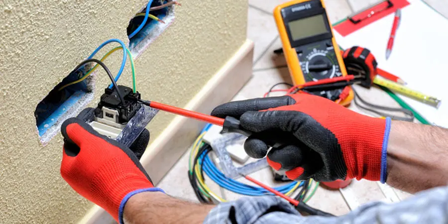
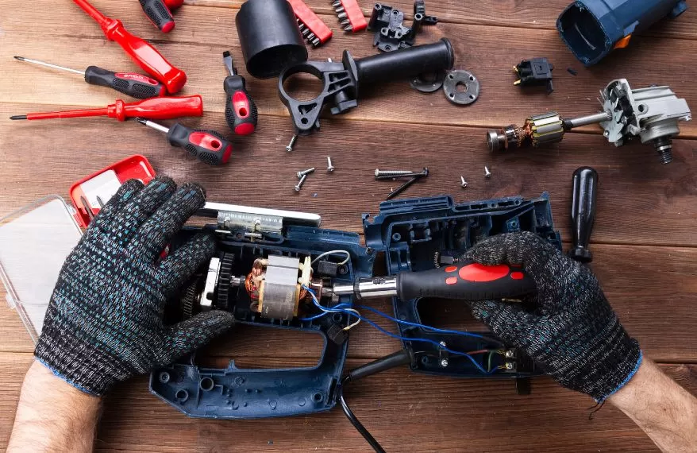

Nuestros servicios
En MANTENYX contamos con diferentes soluciones de mantenimiento orientadas a prevenir fallas, corregir problemas y conservar en buenas condiciones las instalaciones y equipos de nuestros clientes.
Soluciones que ofrecemos
- Mantenimiento preventivo.
- Mantenimiento correctivo.
- Mantenimiento eléctrico.
- Mantenimiento locativo.
- Reparaciones generales.
- Inspección de equipos.
Información de nuestros servicios
| Servicio | Descripción | Tipo de atención |
|---|---|---|
| Mantenimiento preventivo | Revisión periódica para prevenir fallas. | Programada |
| Mantenimiento correctivo | Corrección de daños o fallas existentes. | Según necesidad |
| Mantenimiento eléctrico | Revisión y reparación de instalaciones eléctricas. | Programada o inmediata |
| Mantenimiento locativo | Reparaciones y conservación de instalaciones físicas. | Programada |
| Reparaciones generales | Solución de diferentes daños y necesidades de mantenimiento. | Según necesidad |
| Inspección de equipos | Evaluación del estado y funcionamiento de equipos. | Programada |
Nuestro trabajo


Conoce más sobre el mantenimiento
Conoce la importancia de realizar un mantenimiento adecuado para prevenir fallas y conservar los equipos e instalaciones.